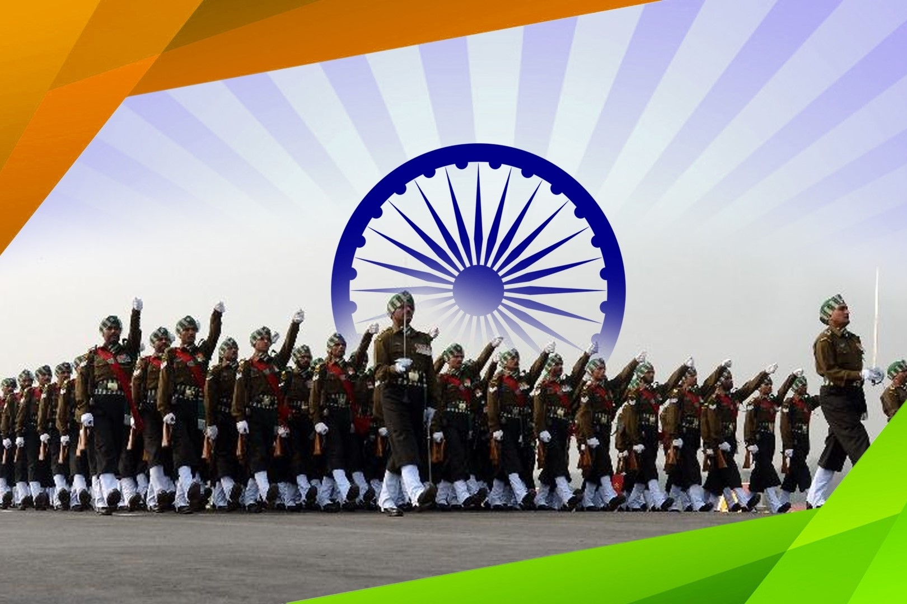
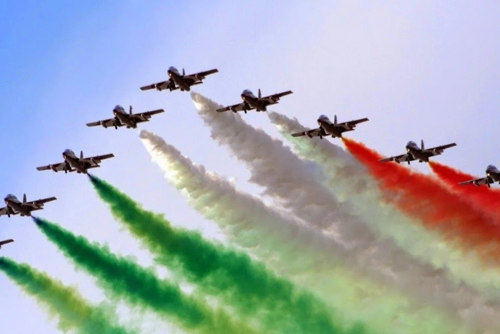
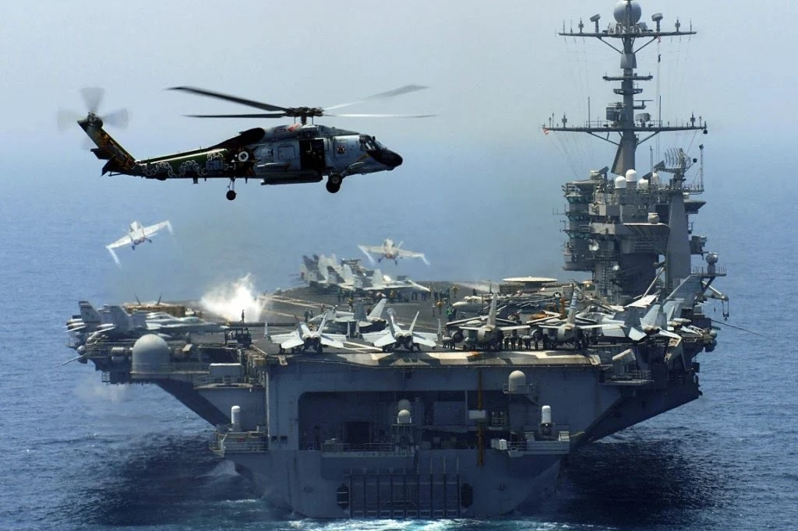
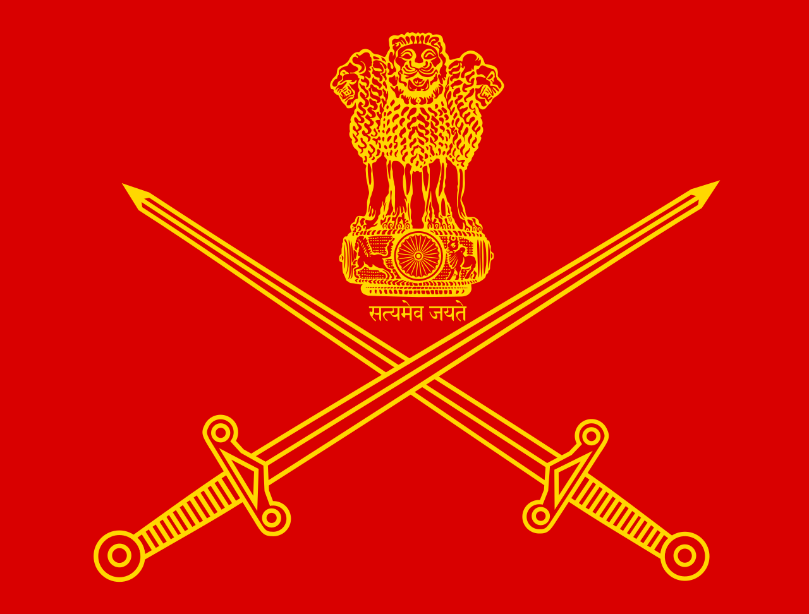
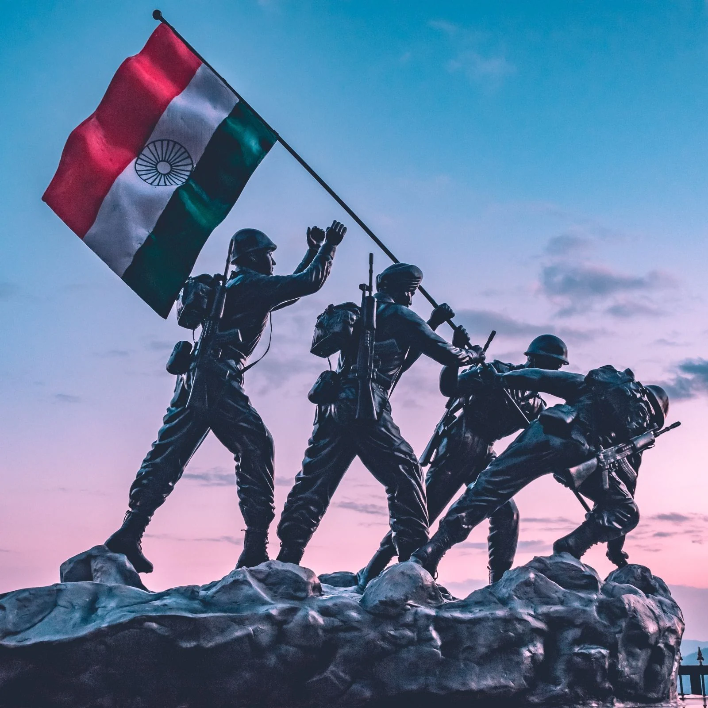
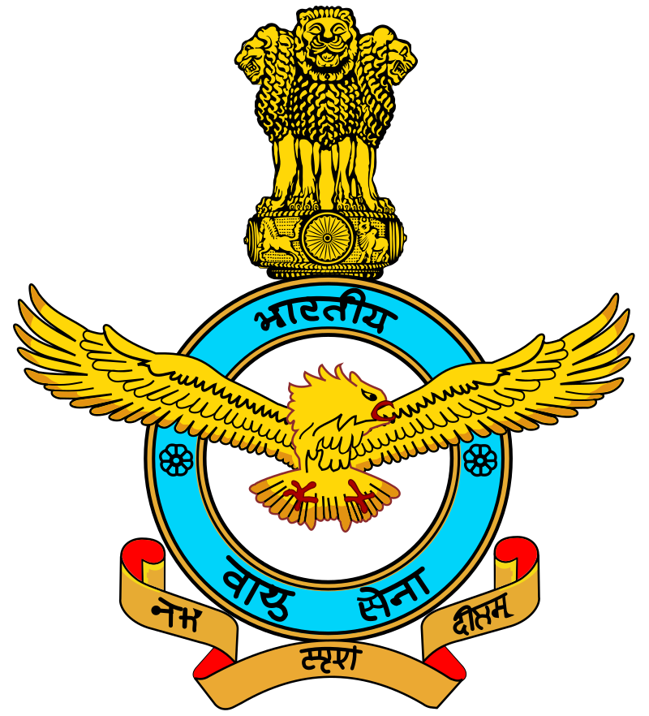
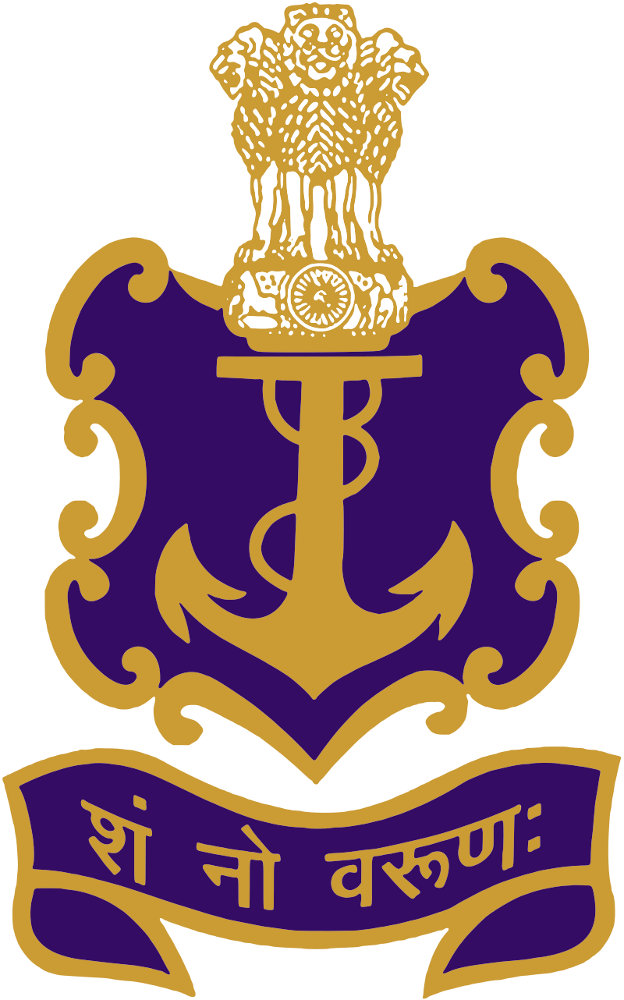

Welcome name

|

|

|

|
Indian Army
The Indian Army is the land-based branch and the largest component of the Indian Armed Forces. The President of India is the Supreme Commander of the Indian Army, and its professional head is the Chief of Army Staff (COAS), who is a four-star general. Two officers have been conferred with the rank of field marshal, a five-star rank, which is a ceremonial position of great honour. The Indian Army originated from the armies of the East India Company, which eventually became the British Indian Army, and the armies of the princely states, which were merged into the national army after independence. The units and regiments of the Indian Army have diverse histories and have participated in several battles and campaigns around the world, earning many battle and theatre honours before and after Independence.
The primary mission of the Indian Army is to ensure national security and national unity, to defend the nation from external aggression and internal threats, and to maintain peace and security within its borders. It conducts humanitarian rescue operations during natural calamities and other disturbances, such as Operation Surya Hope, and can also be requisitioned by the government to cope with internal threats. It is a major component of national power, alongside the Indian Navy and the Indian Air Force. The army has been involved in four wars with neighbouring Pakistan and one with China. Other major operations undertaken by the army include Operation Vijay, Operation Meghdoot, and Operation Cactus. The army has conducted large peacetime exercises such as Operation Brasstacks and Exercise Shoorveer, and it has also been an active participant in numerous United Nations peacekeeping missions, including those in Cyprus, Lebanon, Congo, Angola, Cambodia, Vietnam, Namibia, El Salvador, Liberia, Mozambique, South Sudan, and Somalia.
Equipments:
Most of the army equipment is imported, but efforts are being made to manufacture indigenous equipment. The Defence Research and Development Organisation has developed a range of weapons for the Indian Army, including small arms, artillery, radars, and the Arjun tank. All Indian military small-arms are manufactured under the umbrella administration of the Ordnance Factories Board, with principal firearm manufacturing facilities in Ichhapore, Cossipore, Kanpur, Jabalpur, and Tiruchirapalli. The Indian Small Arms System (INSAS) rifle, which has been successfully deployed since 1997, is a product of Rifle Factory Ishapore, while ammunition is manufactured at Khadki, and possibly at Bolangir.
Aircraft
The Army Aviation Corps is the main body of the Indian Army for tactical air transport, reconnaissance, and medical evacuation, while the Indian Air Force's helicopter assets are responsible for assisting army troop transport and close air support. The Aviation Corps operates approximately 150 helicopters. The Indian army had projected a requirement for a helicopter that can carry loads of up to 750 kilograms (1,650 lb) to heights of 7,000 m (23,000 ft) on the Siachen Glacier in Jammu and Kashmir. Flying at these heights poses unique challenges due to the rarefied atmosphere. The Indian Army will induct the HAL Light Utility Helicopter to replace its ageing fleet of Chetaks and Cheetahs, some of which were deployed more than three decades ago. On 13 October 2012, the defence minister gave control of attack helicopters to the Indian Army, which had formerly rested the Indian Air force.
Future developments
† F-INSAS is the Indian Army's principal infantry modernisation programme, which aims to modernise the army's 465 infantry and paramilitary battalions by 2020. The programme aims to upgrade the infantry to a multi-calibre rifle with an under-barrel grenade launcher, as well as bulletproof jackets and helmets.
† India is currently re-organising its mechanised forces to achieve strategic mobility and high-volume firepower for rapid thrusts into enemy territory. India proposes to progressively deploy as many as 248 Arjun main battle tanks (MBT) and to develop and deploy the Arjun MK-II variant, as well as 1,657 Russian-made T-90S MBTs. The army is procuring 2,000 night vision devices for T-72 tanks, for Rs 10 billion; 1,200 for T-90 tanks, for Rs 9.60 billion; and 1,780 for infantry combat vehicles, for Rs 8.60 billion.
† In 2008, the Cabinet Committee on Security approved raising two new infantry mountain divisions (with around 15,000 combat soldiers each) and an artillery brigade. These divisions were likely to be armed with ultralight howitzers.
Tanks and Armoured vehicles
† Futuristic Battle Tank (FMBT) – The FMBT will be a lighter tank of 50 tons. At the conceptual stage.
† Abhay IFV – Future Infantry Combat Vehicle
† TATA Kestrel – A modern armoured personnel carrier (APC) developed by Tata Motors and the Defence Research and Development Organisation (DRDO). It was developed to replace old Soviet-era infantry fighting vehicles (BMP) and APCs in service with the Indian army. It is expected to join the Indian Army by 2017.
† Arjun MK-IA – main battle tank
Aviation
† The procurement process for 197 light utility helicopters (LUH) has been scrapped; only 64 will be inducted in the Army Aviation to replace the Cheetak and Cheetah Helicopters.
† HAL Light Utility Helicopter (LUH) – requirement for 384 helicopters for both the army and air force.
† HAL has obtained a firm order to deliver 114 HAL Light Combat Helicopters to the Indian Army
Missiles
† 1. Intercontinental Ballistic Missiles
•Agni-V – 5,500 km (3,400 mi)–8,000 km (5,000 mi) Successfully Tested third time canistered version by DRDO on 31 January 2015.
• Agni-VI – 8,000 km (5,000 mi)–12,000 km (7,500 mi) range with MIRVed warheads. Currently in planning stage.
† 2. Cruise Missiles
• Hypersonic Missile
• Brahmos M
• Nirbhay Missile
† 3. Tactical Ballistic Missiles
• Prahaar (missile) – With a range of 150 km (90 mi).
• Agni-II (missile) – It a ballistic missile with a range of 2000–3500 km with a speed of 3.5 km/s.
• Agni-III (missile) – It is the successor to the Agni-II missile with an effective range of 3500–5000 km with a speed of 5–6 km/s.
• Shaurya (missile) – It has a range of between 750 km (470 mi)-1,900 km (1,200 mi)
• Agni-IV – Also known as the Agni-II prime in the earlier times, it has an effective range of 4000 km and a cruise altitude of 900 km.
† 4. Anti-Tank Guided Missiles
• Nag Anti-tank guided missile – ground and air-launched variant.
† The Indian Ballistic Missile Defence Programme is an initiative to develop and deploy a multi-layered ballistic missile defence system to protect India from ballistic missile attacks. It is a double-tiered system consisting of two interceptor missiles, namely the Prithvi Air Defence (PAD) missile for high altitude interception, and the Advanced Air Defence (AAD) Missile for lower altitude interception
Artillery
Under the Field Artillery Rationalisation Plan (FARP) of 2010, the army plans to procure 3000 to 4000 pieces of artillery at the cost of ₹200 billion (US$3 billion). This includes purchasing 1580 towed, 814 mounted, 180 self-propelled wheeled, 100 self-propelled tracked, and 145 ultra-light 155 mm/39 calibre guns. The requirement for artillery guns would be met with indigenous development and production.[201] The FARP has resulted in a collaboration with Korea over the K-9 Vajra-T (an offshoot of the Korean K9 Thunder), some of which will be built domestically by Larsen & Toubro. The K9 contract was signed in the midst of the failure of the Dhanush (howitzer) programme. As well the fully indigenous towed artillery ATAGS howitzer had a successful field trials in spring 2022 at the Pokhran Field Firing Range. It is produced by Bharat Forge and Tata Advanced Systems Limited.
Small Arms
Earlier development efforts of the DRDO to meet the Indian Army's small arms requirements—namely the Excalibur rifle, which was meant to replace the INSAS rifle in service; the Multi Caliber Individual Weapon System (MCIWS); and the Modern Sub Machine Carbine, a combined venture of ARDE & OFB to develop an assault carbine for the Indian Army based on a platform of experiences from the INSAS rifle—have been halted.
To meet the needs of the rest of its soldiers, the army has selected the Russian 7.62 mm AK-103/AK-203 assault rifle as a "Make in India" project to manufacture 650,000 rifles through a government-to-government agreement.
To meet the needs of the rest of its soldiers, the army has selected the Russian 7.62 mm AK-103/AK-203 assault rifle as a "Make in India" project to manufacture 650,000 rifles through a government-to-government agreement.
Vehicles
† Tata Motors offers a full range of 6×6, 8×8, and 12×12 multi-purpose high mobility carriers, designed especially for integrating specialist rocket and missile systems. The Tata 2038 6×6 vehicle platform has, after rigorous field-firing evaluation trials, been qualified by the Indian Army to carry the GRAD BM21 Multi Barrel Rocket Launcher (MBRL) application.
† Mahindra Axe – Light utility vehicle to be purchased.
† The army needs 3,000 light support vehicles and 1600 heavy motor vehicles for mounting rockets and radar, and for reconnaissance and transportation, at a cost of Rs 15 billion.
Quick Facts:
† The Indian army controls the highest battlefield in the world, the Siachen Glacier, which is 5000 metres above sea level.
† The Indian army has the biggest voluntary military force in the world.
† The Bailey bridge, the highest altitude bridge in the world, is built by the Indian army.
† We also have a horsed cavalry regiment, one of the last 3 remaining in the world!
† The Indian army has never initiated the first attack or engaged in a military coup to gain power or govern a nation.
Indian Air Force
The Indian Air Force (IAF) is the air arm of the Indian Armed Forces. Its complement of personnel and aircraft assets ranks third amongst the air forces of the world. Its primary mission is to secure Indian airspace and to conduct aerial warfare during armed conflict. It was officially established on 8 October 1932 as an auxiliary air force of the British Empire which honoured India's aviation service during World War II with the prefix Royal. After India gained independence from United Kingdom in 1947, the name Royal Indian Air Force was kept and served in the name of Dominion of India. With the government's transition to a Republic in 1950, the prefix Royal was removed.
Since 1950, the IAF has been involved in four wars with neighbouring Pakistan. Other major operations undertaken by the IAF include Operation Vijay, Operation Meghdoot, Operation Cactus and Operation Poomalai. The IAF's mission expands beyond engagement with hostile forces, with the IAF participating in United Nations peacekeeping missions.
The President of India holds the rank of Supreme Commander of the IAF.As of 1 July 2017, 170,576 personnel are in service with the Indian Air Force. The Chief of the Air Staff, an air chief marshal, is a four-star officer and is responsible for the bulk of operational command of the Air Force. There is never more than one serving ACM at any given time in the IAF. The rank of Marshal of the Air Force has been conferred by the President of India on one occasion in history, to Arjan Singh. On 26 January 2002, Singh became the first and so far, only five-star rank officer of the IAF.
read more...Indian Navy
The Indian Navy is the naval branch of the Indian Armed Forces. The President of India is the Supreme Commander of the Indian Navy. The Chief of Naval Staff, a four-star admiral, commands the navy. As a blue-water navy, it operates significantly in Persian Gulf Region and the Horn of Africa to the Strait of Malacca, and routinely conducts anti-piracy operations and partners with other navies in the region. It also conducts routine two to three month-long deployments in the South and East China seas as well as the western Mediterranean sea simultaneously.
The primary objective of the navy is to safeguard the nation's maritime borders, and in conjunction with other Armed Forces of the union, act to deter or defeat any threats or aggression against the territory, people or maritime interests of India, both in war and peace. Through joint exercises, goodwill visits and humanitarian missions, including disaster relief, Indian Navy promotes bilateral relations between nations.
As of June 2019, Indian Navy has 67,252 active and 75,000 reserve personnel in service and has a fleet of 150 ships and submarines, and 300 aircraft. As of April 2022, the operational fleet consists of 1 active aircraft carrier and 1 amphibious transport dock, 8 landing ship tanks, 10 destroyers, 13 frigates, 1 ballistic missile submarine, 16 conventionally-powered attack submarines, 24 corvettes, one mine countermeasure vessel, 4 fleet tankers and numerous other auxiliary vessels, small patrol boats and sophisticated ships. It is considered as a multi-regional power projection blue-water navy.
read more...